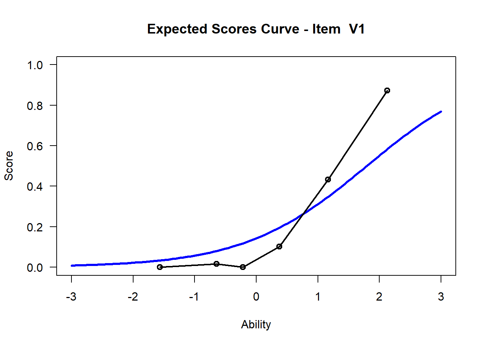

Chapter 5 Item Fit
Let’s find out if the data fit the model. Use the tam.fit function to compute fit statistics, then display. We note that items V1 and V2 have outfits that are drastically different from the items’ infit values. We also note that infit values of V1 and V2 are different from any of the other items. We note that V1 is “over fitting,” it’s outfit and infit values being well below 1, while V2 is “underfitting.” This means that item V1 is too predictable - the amount of information is well predicted from other items which means it provides little new information above and beyond the other items. On the other hand, the underfitting V2 item has too much randomness.
However, outfit is “outlier” sensitive whereas “infit” is not. This implies that for V2 there might be a few responses that are particularly random/unexpected.
fit <- tam.fit(mod1)## Item fit calculation based on 15 simulations
## |**********|
## |----------|str(fit)## List of 3
## $ itemfit:'data.frame': 15 obs. of 9 variables:
## ..$ parameter : Factor w/ 15 levels "V1","V10","V11",..: 1 8 9 10 11 12 13 14 15 2 ...
## ..$ Outfit : num [1:15] 0.638 3.647 1.007 0.975 1.061 ...
## ..$ Outfit_t : num [1:15] -8.155 16.823 0.13 -0.466 1.638 ...
## ..$ Outfit_p : num [1:15] 3.48e-16 1.65e-63 8.97e-01 6.41e-01 1.01e-01 ...
## ..$ Outfit_pholm: num [1:15] 4.87e-15 2.48e-62 1.00 1.00 1.00 ...
## ..$ Infit : num [1:15] 0.835 1.236 1.023 0.976 1.035 ...
## ..$ Infit_t : num [1:15] -3.418 2.312 0.447 -0.418 0.955 ...
## ..$ Infit_p : num [1:15] 0.000631 0.020791 0.655131 0.676105 0.339761 ...
## ..$ Infit_pholm : num [1:15] 0.00947 0.29108 1 1 1 ...
## $ time : POSIXct[1:2], format: "2021-02-07 11:36:28" ...
## $ CALL : language tam.fit(tamobj = mod1)
## - attr(*, "class")= chr "tam.fit"View(fit$itemfit)| parameter | Outfit | Outfit_t | Outfit_p | Outfit_pholm | Infit | Infit_t | Infit_p | Infit_pholm |
|---|---|---|---|---|---|---|---|---|
| V1 | 0.6383714 | -8.1554019 | 0.0000000 | 0 | 0.8348462 | -3.4177419 | 0.0006314 | 0.0094714 |
| V2 | 3.6465786 | 16.8231285 | 0.0000000 | 0 | 1.2356222 | 2.3117556 | 0.0207912 | 0.2910762 |
| V3 | 1.0070340 | 0.1295754 | 0.8969024 | 1 | 1.0228747 | 0.4466451 | 0.6551313 | 1.0000000 |
| V4 | 0.9748497 | -0.4659869 | 0.6412249 | 1 | 0.9762107 | -0.4177843 | 0.6761048 | 1.0000000 |
| V5 | 1.0607335 | 1.6380141 | 0.1014188 | 1 | 1.0346503 | 0.9546381 | 0.3397608 | 1.0000000 |
| V6 | 0.9994803 | -0.0267441 | 0.9786639 | 1 | 0.9978029 | -0.0809735 | 0.9354630 | 1.0000000 |
| V7 | 0.9740049 | -0.9865275 | 0.3238743 | 1 | 0.9825199 | -0.6577626 | 0.5106907 | 1.0000000 |
| V8 | 0.9631538 | -1.4311944 | 0.1523745 | 1 | 0.9708594 | -1.1250402 | 0.2605720 | 1.0000000 |
| V9 | 0.9812937 | -0.7150875 | 0.4745550 | 1 | 0.9807213 | -0.7252596 | 0.4682928 | 1.0000000 |
| V10 | 1.0386943 | 0.4476908 | 0.6543764 | 1 | 0.9988250 | 0.0122243 | 0.9902466 | 1.0000000 |
| V11 | 0.9552567 | -0.6506701 | 0.5152594 | 1 | 0.9939558 | -0.0671564 | 0.9464572 | 1.0000000 |
| V12 | 1.0403143 | 0.9787221 | 0.3277173 | 1 | 1.0168324 | 0.4227396 | 0.6724852 | 1.0000000 |
| V13 | 0.8698424 | -1.2907226 | 0.1967999 | 1 | 0.9993232 | 0.0240080 | 0.9808462 | 1.0000000 |
| V14 | 0.9619077 | -1.3721399 | 0.1700199 | 1 | 0.9773742 | -0.8062110 | 0.4201212 | 1.0000000 |
| V15 | 0.9826981 | -0.6696410 | 0.5030867 | 1 | 0.9830750 | -0.6498991 | 0.5157574 | 1.0000000 |
5.0.1 Exercise:
- Which items fit best? Which items fit worst?
- How many, if any items, are outside the traditional bounds of mean-square item fit [.75, 1.33]?
5.1 Optional - Visualizing Item Fit
If you’d like, we can use default WrightMap functionality to plot item fit statistics. In the fit object, itemfit is a dataframe containing various fit statistics. We’ll plot infit with a lowerbound of .75 (in mean-square error units) and an upper bound of 1.33
The nice thing is that you can create unique fitbounds for each item (such that it’s sensitive to sample size). However, if we want all the same fit values, we have to just repeat the fit value (in our case, there are 15 items).
infit <- fit$itemfit$Infit
upper_bound <- rep(x = 1.33, times =15) # this repeats 1.33 fifteen times
lower_bound <- rep(x = .75, times = 15)
# running fitgraph
fitgraph(fitEst = infit, fitLB = lower_bound, fitUB = upper_bound, itemLabels = names(hls))
# what about outfit?
outfit <- fit$itemfit$Outfit
fitgraph(fitEst = outfit, fitLB = lower_bound, fitUB = upper_bound, itemLabels = names(hls)) If you wanted to do this with ggplot - play with the code to try to change the fit limits or plot outfit instead of infit.
If you wanted to do this with ggplot - play with the code to try to change the fit limits or plot outfit instead of infit.
# put the fit data in a dataframe
fit_stats <- fit$itemfit
fit_stats %>%
ggplot(aes(x=parameter, y = infit)) +
geom_point() +
geom_hline(yintercept = 1.2) +
geom_hline(yintercept = .8) +
scale_y_continuous(breaks = scales::pretty_breaks(n = 15)) +
ggtitle("Item Fit Statistics for Lab 3 Data")